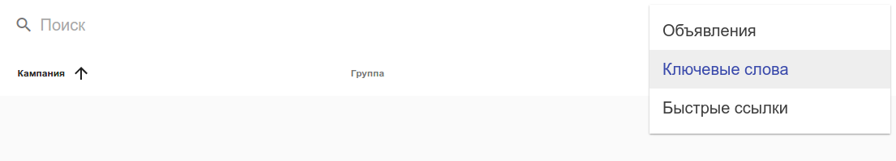

В этом окне вы можете просматривать основную информацию по каждой группе объявлений.
Вся вносимая вами информация будет автоматически отображаться сдесь.
Вы можете сортировать колонки, изменять категорию для отображения нужной вам информации (Ключевые слова, Быстрые ссылки) и использовать поиск.
